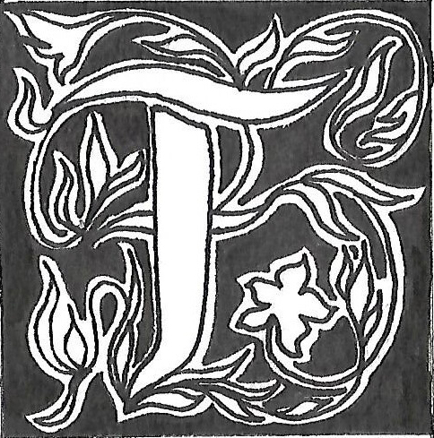

Fabienne Yvert : un rapport assez physique à l’écriture
Propos recueillis par Marie Bouruet-Aubertot et Maëlie Saby
abienne Yvert est une artiste, auteure et typographe. Son travail explore
les frontières entre les arts plastiques et la poésie. Elle a développé un style hybride, utilisant les mots comme matériau principal sur divers supports. Ses œuvres, qu’il s’agisse de livres d’artiste ou de créations plastiques, montrent une volonté de saisir le quotidien. Elle cherche à rendre visible l’invisible et à exprimer des expériences personnelles et universelles avec une
certaine justesse.
À quel moment de votre parcours avez-vous commencé
à intégrer les mots dans votre pratique ?
Les mots étaient là depuis toujours. À l’époque où je suis entrée aux Beaux-Arts, ce n’était pas du tout à la mode d’écrire. C’était même plutôt mal vu. J’ai commencé en recouvrant les mots de peinture. Les mots étaient présents mais pas forcément lisibles. Ensuite, je me suis mise assez vite à réaliser des livres d’artiste avec diverses techniques : peinture, collage…
Comment définiriez-vous votre approche artistique ? Qu’est-ce qui vous a donné envie de mélanger les pratiques plastiques à la pratique de l’écriture ?
Mon approche artistique est plutôt littéraire car je fais aussi de l’écriture. Le rapport images-mots m’intéresse. Je pense que c’est un lien certainement lié aux albums jeunesse, aux livres d’enfance. Selon moi, ce sont les livres où le rapport images-mots est le plus fort. Certains livres m’ont fasciné. J’en ai gardé quelques-uns dont plusieurs font partie d’une collection magnifique, faite par la photographe Dominique Darbois. Elle partait en reportage photographier des enfants. Il y avait un prénom associé à chaque titre de ses livres. Cette collection, « Enfant
du Monde », a été une grande révélation, du fait qu’on puisse mélanger des mots et des images. Dans cette collection, c’est
à la fois des photos, du graphisme et de la couleur. C’est vivant et mélangé. La composition d’« Enfant du Monde », montre qu’il y a une interaction entre les deux et que cela peut renforcer l’un et l’autre.
Vous parlez d’interaction, cependant, dans certaines de vos œuvres, nous avons remarqué un contraste entre l’image
et les mots. On l'observe par exemple dans Des mots et des images [fig. 01 : Des mots et des images, 2020, linogravure
et typographie] : dans votre réalisation avec les symboles
de l’enveloppe fermée et l’envoi de la lettre, nous ne nous imaginons pas trouver un message d’affection. Est-ce que
le contraste fait partie de votre intention artistique ?
Pour Des mots et des images ou pour d’autres de mes réali-
sations, c’est vraiment l’interaction et le contraste qui m’intéressent : comment ça marche l’un contre l’autre ou l’un avec l’autre. Le décalage ouvre sur l’imaginaire, sur le pouvoir des mots. On peut avoir une grande confiance dans le poids des mots. En même temps, ils sont incroyablement traîtres et à double sens. J’aime jouer à la fois avec les mots et avec l’image, soit en relation, soit en contraste. Dans tous les cas, il se passe quelque chose entre les deux.
Au niveau de la composition de vos travaux, qu’est-ce qui explique le jeu de proportions que vous introduisez entre image et mot ?
J’aurais tendance à dire que le mot est plus important pour moi. Cela peut s’expliquer peut-être parce que je suis moins à l’aise avec l’image, je ne dessine pas très bien. Trente ans avant
3 trucs bien, j’ai effectué un travail qui s’appelle 365 légendes quotidiennes exemplaires. C’était pour me forcer à travailler. Tous les jours, je dessinais quelque chose qui était chez moi
ou en lien avec ma journée. Je choisissais un objet avec le but de le dessiner, et ensuite de mettre une légende. Cela partait vraiment de l’objet. J’ai fait cet exercice pendant toute l’année. Par la suite, j’en ai fait un livre. Il n’y avait que la légende et de temps en temps une illustration.
3 trucs bien, qui intègre cette notion de quotidien, nous a justement intéressées. Nous trouvions ce livre pertinent, que ce soit au niveau de la typographie mais aussi de votre méthode de travail. Comment avez-vous organisé ce travail de notations quotidiennes ?
En règle générale, sur mon agenda je note tout ce que je fais
et quelques phrases qui me viennent. Cela me sert d’aide-mémoire. Puis j’ai des tas de carnets avec plein de notes.
Au début, cet exercice des 3 trucs bien était plus difficile. Mais après c’est venu assez naturellement. L’objectif était de faire cela sur le long terme. C’était aussi d’être émerveillée par des petites « conneries » de tous les jours. Il s’agissait par ailleurs
de les relever, de les voir, de les enregistrer, pour ensuite les utiliser ou non pour créer. Je suis attentive au quotidien en règle générale. Il me semblait intéressant depuis le début de mon travail d’arriver à formuler des éléments personnels de façon qu’ils soient valables pour beaucoup de monde. Le contenu ne doit pas être gênant à lire, ni pour moi, ni pour ceux qui le lisent.
Cet aspect me semble important.
Pourquoi ne pas avoir plutôt choisi de garder vos écrits
pour vous comme une sorte de journal intime ? Et qu’est-ce qui fait que dans la journée, il n’y a que trois éléments qui retiennent votre attention ?
J’ai toujours aimé les journaux. C’est peut-être parce que je viens d’une famille où on parlait peu. De ce fait, formuler avec justesse est précieux pour moi. On peut par la suite jouer avec. L’idée de 3 trucs bien vient au départ d’une amie qui m’avait conseillé ce petit exercice. J’ai des retours, cela donne envie
à d’autres de le faire afin de voir le monde autrement. Ils font attention à des éléments auxquels ils ne faisaient pas habituellement attention car ils ne prenaient pas le temps. Cela peut aussi aider à voir sa vie, la vivre un peu autrement en faisant attention à de petits moments qui illuminent. Je pense que c’est aussi ça la poésie.
Pour vous, la poésie c’est donc mettre en lumière
des éléments quotidiens qui illuminent nos vies ?
Oui, c’est cela entre autres. Je pense à Richard Brautigan par exemple, qui écrit à la fois des petites nouvelles et de la poésie. Je pense que les Américains ont développé un peu plus le fait de faire attention aux choses quotidiennes que les Européens. Brautigan fait partie de mes grands maîtres.
Que vous apporte personnellement le fait de travailler
avec votre quotidien ? Cela vous permet-il de réaliser
une archive de ce que vous vivez ?
Au départ, je voulais me fixer des règles du jeu. Cela impliquait des règles temporaires avec une répétition et une prise de notes quotidienne. L’exercice m’obligeait à produire en me donnant un rythme de travail. D’autre part le fait que j’ai toujours mon carnet me rassure dans la mesure où je n’invente rien, il me sert de support de création.
La vie quotidienne c’est quand même ce que je connais le mieux. Ma vie ou ce que je vois, ce que je fais, c’est là où je suis sûre des choses. Mais il se trouve que maintenant, je m’en détache, je travaille sur l’espace par exemple. Le spatial est un thème qui échappe à mon quotidien.
Dans 3 trucs bien, la typographie est assez simple [fig. 02 : 3 trucs biens, Le Tripode, 2018, extrait]. Elle fait penser à celle de la machine à écrire. De plus, avec la répétition du signe égal, nous avons l’impression d’avoir une écriture assez mathématique. Pourquoi avoir choisi cette typographie
et cette disposition ?
Que tu t’en rendes compte ou pas à chaque fois que tu lis un livre, la typographie est importante et te fait lire un peu autrement. Si tu prends n’importe quel roman, sa mise en page, le blanc qu’il y a autour, les marges, tout cela compte. Il se trouve que quand je fais des livres chez des éditeurs qui éditent mes livres en librairie, c’est moi qui fais les maquettes. Je cherche
le format le plus approprié. Cela se joue à un demi-centimètre. Tout est possible ! Je cherche aussi à rendre le texte comme un objet, aussi simple à lire que possible, tout en intégrant du jeu avec ce que j’ai à dire et à montrer. Par exemple, dans 3 trucs bien, j’étais un peu déçue par la pâleur de l’encre jaune, qui ne permet pas de bien voir.
Dans vos réalisations, pour écrire, vous utilisez différentes techniques comme les tampons, le chalumeau… Qu’est-ce qui motive ces choix ?
Je choisis les matériaux en fonction de ce que j’ai envie de
réaliser ou envie de dire. J’aime bien apprendre des nouvelles techniques et ne pas faire toujours la même chose. Cela me permet de sortir de mes habitudes. Travailler avec le matériau du verre par exemple, c’est assez difficile, je ne le maîtrise pas très bien, et donc cela m’intéresse. La typographie, je sais faire. C’est une façon de changer, d’apprendre et de dire différemment. J’ai fait des livres en porcelaine. Ce qui me plaisait c’était de travailler avec cette matière. Elle me rappelle vraiment les tablettes, au sens mésopotamien ainsi que la page blanche.
Pour rester sur cette discussion des supports et des
matériaux, pouvez-vous nous éclairer sur ceux de vos estampes dans Des mots et des images ?
Ce sont des papiers de grands registres de comptabilité. Cela me semblait important de jouer avec les supports. Il se trouve que je partage avec des amis un atelier d’imprimerie typographique, donc avec des lettres en bois, en plomb, etc. L’atelier
a été un lieu essentiel dans ma façon de travailler, que ce soit avec la typographie, ou avec des tampons. En tout cas, il t’incite à voir, à prendre les mots, à prendre les lettres dans tes mains.
Il apporte un rapport assez physique à l’écriture, à l’imprimerie et à l’impression. Quand j’imprime mes travaux moi-même,
ou quand je fais des affiches, il y a de la matière. Écrire est un travail manuel, donc ce n’est pas que des idées, c’est pareil que quand on fait une maquette. Même si c’est sur l’ordinateur, le procédé est quand même physique : tu choisis la typographie, la taille de police, les marges, le papier …
Nous nous sommes intéressées à certains de vos travaux lors de votre résidence à Tulle, notamment les Affichages
en ville [fig. 03 : Affichage en ville, 2020, estampe et peinture] qui ont été réalisés à partir de vos Dessins dégradés. Quelle est la réception de vos créations par le public en extérieur ?
Avant cette résidence, ce qui m’intéressait c’était l’histoire
du petit ou grand format, c’est-à-dire comment quelque chose de petit peut devenir très grand, une grande affiche. Je trouvais très agréable de constater que le changement d’échelle fonctionnait. Amener un dessin qui n’est pas fait pour cet usage
au départ, me semble pertinent. Cela permet de s’interroger
sur les rôles de l’affichage dans l’espace public. Il me semblait pertinent que tout d’un coup les gens soient confrontés à voir des traits de pinceaux, des techniques plastiques. On n’a pas l’habitude de voir cela dans les affiches.
Avant Tulle, j’ai fait une résidence à Toulouse, à la Cave Poésie.
Les affiches de la ville m’ont donné envie de m’essayer à ce
format. Mettre du texte, des jeux de mots et des dessins qui font réfléchir dans les abribus, était une expérience formidable ! Quand tu prends le bus, tu regardes ce qui est écrit, tu regardes les pubs. Cela te fait réfléchir ou t’énerve, ou je ne sais quelles autres réactions. C’est une façon de remettre de la poésie ou
de l’art dans l’espace public. Je trouve important que l’art soit transporté dans le quotidien des gens.
Pendant cette résidence, vous aviez aussi peint ces petites affiches sur un local [fig. 04 : Peinture sur une devanture, 2020, blanc de meudon]. Pouvez-vous nous en parler ?
On avait un local avec une grande vitrine et sur laquelle on pouvait régulièrement afficher et peindre des dessins au blanc de Meudon. C’était amusant de voir les passants s’arrêter quand il y avait les dessins et quand il n’y avait plus rien à observer. Quand j’étais à l’intérieur, je pouvais ouvrir la porte, parler avec eux et les faire entrer. La plupart ne rentrait pas parce qu’ils étaient intimidés, ils se disaient : « Ce n’est pas pour nous ». L’accès des passants à cet endroit, mais aussi à ces paroles
était important pour moi. On ne retrouve pas des paroles à tous les coins de rue. D’autant plus que lors de cette résidence,
les paroles venaient d’un travail avec des migrants.
Dans La verrité [fig. 05 : La verrité, 2019, Espace Jacques Villeglé, Saint-Gratien], nous constatons une certaine illisibilité ainsi que des effets d’ombre. Pouvons-nous dire que
l’accrochage en verre fait image ?
Vous devez croire cela parce que vous avez vu des photographies. En réalité cela joue différemment parce que le verre
est transparent : on voit derrière, au travers et il y a des reflets.
Je ne sais pas si l’accrochage fait image. Et justement je pense que ça ne fait pas image. À mon sens cela fait à la fois écran
et non écran, comme dans ma création en porcelaine. Cela crée un rideau où on peut voir devant ou derrière, mais aussi entre les deux.
Quel rapport entretenez-vous à l’image, notamment dans Paysages Textuels ? Quels liens aviez-vous auparavant avec la photographie ?
Paysages textuels, je l’ai réalisé avec un ami photographe. Il y a très longtemps, on m’avait offert un polaroïd, un SX 70, avec lequel, je faisais une photo tous les jours. Il y avait encore l’idée de saisir un petit bout du réel. Ce n’était pas avec des mots mais juste une image. Je dirai que mon rapport à la photo c’est cette notion : comment saisir le temps.
Dans Les pensées portatives, aviez-vous pour intention la revendication de certaines de vos idées sur le long terme ? Quel était le but initial de ces sacs ?
Non, rien à revendiquer. C’est une façon de communiquer autrement, en emmenant les mots dans les espaces publics, différemment de la publicité. Mes sacs m’ont permis de m’interroger sur une nouvelle manière de rendre visible des mots personnels (peu dit, visibles, entendus, partagés) à l’extérieur afin que d’autres personnes puissent les voir. Elles sont directement confrontées aux mots. Soit elles réagissent personnellement, soit un dialogue s’instaure. Et pour moi, cela fait aussi partie de l’éducation populaire : il s’agit vraiment de travailler avec tous et de se rendre compte que l’art, la littérature, sont pour tout
le monde. Cela passe aussi par l’espace public [fig. 06 : Pensées portatives, toile de jute].